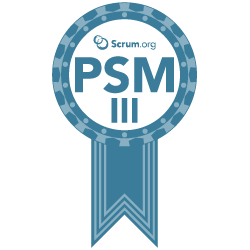
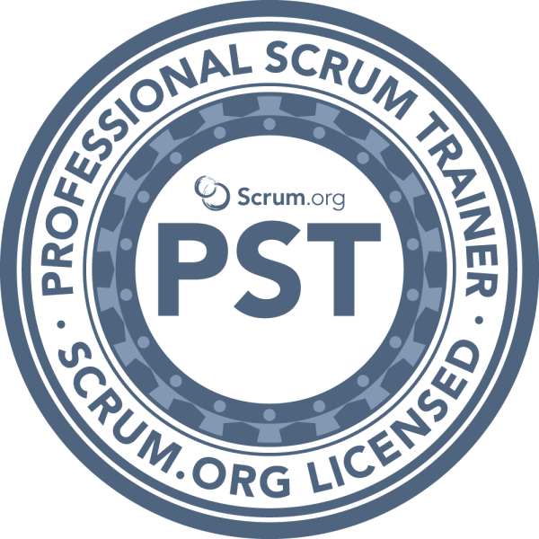
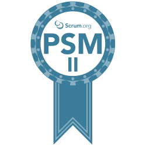

John Albrecht
John is a Scrum Master and coach with a long and varied experience of growing Agile teams. He has a technical software development background and growing teams from within using value-based principles. A true leader who serves, fostering an environment where the scrum values are embodied, building trust with teams coming to life. As a meetup and conference speaker, John has spoken and facilitated workshops on Servant Leadership, Wardley Mapping, TA, Story Mapping, Example Mapping and Big Room Vision, Scrum Builders. He is a keen visual facilitator, drawing all the metaphors and symbols you see within Scrum Lake.
John perhaps is best known for his audiobook recordings of the Scrum Guide 2017 and The Scrum Guide 2020; which is freely available stream and listen to on Spotify, Apple and Amazon and many other podcast platforms.
Alongside working with teams, he provides one to one coaching and mentoring for Scrum Masters, Product Owners and Agile leaders.
Email john@scrumlake.com
or connect with him at or
Ryan Brook
Ryan spends his time working with teams and organisations to change their mindset from 'delivery at whatever cost' to 'value at whatever cost'. Whilst he refers to himself as a Scrum Master, he isn't wedded to one particular framework. He uses creativity and a positive attitude to affect change and encourages people to find what works for them. Improving organisational culture is the backbone of Ryan's practice. Without it, he believes teams are not able to reap the benefits of an empirical framework.
Email ryan@scrumlake.com
or connect with him at
Kay Wagner
Kay is a Scrum Master who loves to help individuals and teams to improve everyday by inspecting and adapting. He strongly believes that the people he works with are the experts of their topics and thus the solutions lie within each of them. The Scrum Framework is a great way to help teams and organizations deliver value. Being a Scrum Master, Kay is not limited to one framework. Kay is a Serious Scrum Road to Mastery guide where he guides people on their journey of Scrum Mastery.
Scott Richards
Scott is passionate about self-development and being a forever learner, he has worked in Technology for over a decade, with the past 5 being in software development, starting in large waterfall projects as a Defect Manager, but then taking the red pill and starting the journey of Scrum Mastery.
Scott works as a freelance Scrum Master, Facilitator, and all-round Agile aficionado - Lean, Kanban, he loves it all. Scott gets excited about helping teams to realise that they have the answers within themselves.